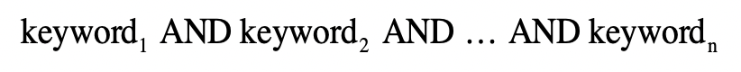
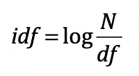
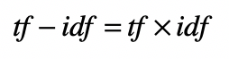

- 01 二进制：不了解计算机的源头，你学什么编程.md.html
- 02 余数：原来取余操作本身就是个哈希函数.md.html
- 03 迭代法：不用编程语言的自带函数，你会如何计算平方根？.md.html
- 04 数学归纳法：如何用数学归纳提升代码的运行效率？.md.html
- 05 递归（上）：泛化数学归纳，如何将复杂问题简单化？.md.html
- 06 递归（下）：分而治之，从归并排序到MapReduce.md.html
- 07 排列：如何让计算机学会“田忌赛马”？.md.html
- 08 组合：如何让计算机安排世界杯的赛程？.md.html
- 09 动态规划（上）：如何实现基于编辑距离的查询推荐？.md.html
- 10 动态规划（下）：如何求得状态转移方程并进行编程实现？.md.html
- 11 树的深度优先搜索（上）：如何才能高效率地查字典？.md.html
- 12 树的深度优先搜索（下）：如何才能高效率地查字典？.md.html
- 13 树的广度优先搜索（上）：人际关系的六度理论是真的吗？.md.html
- 14 树的广度优先搜索（下）：为什么双向广度优先搜索的效率更高？.md.html
- 15 从树到图：如何让计算机学会看地图？.md.html
- 16 时间和空间复杂度（上）：优化性能是否只是“纸上谈兵”？.md.html
- 17 时间和空间复杂度（下）：如何使用六个法则进行复杂度分析？.md.html
- 18 总结课：数据结构、编程语句和基础算法体现了哪些数学思想？.md.html
- 19 概率和统计：编程为什么需要概率和统计？.md.html
- 20 概率基础（上）：一篇文章帮你理解随机变量、概率分布和期望值.md.html
- 21 概率基础（下）：联合概率、条件概率和贝叶斯法则，这些概率公式究竟能做什么？.md.html
- 22 朴素贝叶斯：如何让计算机学会自动分类？.md.html
- 23 文本分类：如何区分特定类型的新闻？.md.html
- 24 语言模型：如何使用链式法则和马尔科夫假设简化概率模型？.md.html
- 25 马尔科夫模型：从PageRank到语音识别，背后是什么模型在支撑？.md.html
- 26 信息熵：如何通过几个问题，测出你对应的武侠人物？.md.html
- 27 决策树：信息增益、增益比率和基尼指数的运用.md.html
- 28 熵、信息增益和卡方：如何寻找关键特征？.md.html
- 29 归一化和标准化：各种特征如何综合才是最合理的？.md.html
- 30 统计意义（上）：如何通过显著性检验，判断你的A_B测试结果是不是巧合？.md.html
- 31 统计意义（下）：如何通过显著性检验，判断你的A_B测试结果是不是巧合？.md.html
- 32 概率统计篇答疑和总结：为什么会有欠拟合和过拟合？.md.html
- 33 线性代数：线性代数到底都讲了些什么？.md.html
- 34 向量空间模型：如何让计算机理解现实事物之间的关系？.md.html
- 35 文本检索：如何让计算机处理自然语言？.md.html
- 36 文本聚类：如何过滤冗余的新闻？.md.html
- 37 矩阵（上）：如何使用矩阵操作进行PageRank计算？.md.html
- 38 矩阵（下）：如何使用矩阵操作进行协同过滤推荐？.md.html
- 39 线性回归（上）：如何使用高斯消元求解线性方程组？.md.html
- 40 线性回归（中）：如何使用最小二乘法进行直线拟合？.md.html
- 41 线性回归（下）：如何使用最小二乘法进行效果验证？.md.html
- 42 PCA主成分分析（上）：如何利用协方差矩阵来降维？.md.html
- 43 PCA主成分分析（下）：为什么要计算协方差矩阵的特征值和特征向量？.md.html
- 44 奇异值分解：如何挖掘潜在的语义关系？.md.html
- 45 线性代数篇答疑和总结：矩阵乘法的几何意义是什么？.md.html
- 46 缓存系统：如何通过哈希表和队列实现高效访问？.md.html
- 47 搜索引擎（上）：如何通过倒排索引和向量空间模型，打造一个简单的搜索引擎？.md.html
- 48 搜索引擎（下）：如何通过查询的分类，让电商平台的搜索结果更相关？.md.html
- 49 推荐系统（上）：如何实现基于相似度的协同过滤？.md.html
- 50 推荐系统（下）：如何通过SVD分析用户和物品的矩阵？.md.html
- 51 综合应用篇答疑和总结：如何进行个性化用户画像的设计？.md.html
- 导读：程序员应该怎么学数学？.md.html
- 开篇词 作为程序员，为什么你应该学好数学？.md.html
- 数学专栏课外加餐（一） 我们为什么需要反码和补码？.md.html
- 数学专栏课外加餐（三）：程序员需要读哪些数学书？.md.html
- 数学专栏课外加餐（二） 位操作的三个应用实例.md.html
- 结束语 从数学到编程，本身就是一个很长的链条.md.html
- 捐赠
35 文本检索：如何让计算机处理自然语言？
你好，我是黄申。
上一节，我详细解释了向量空间和向量空间模型。你也许觉得理论上的内容还是过于抽象，不太好理解。别急，今天我就来具体演示一下如何使用这个模型。由于学者们最初是在信息检索领域使用这个模型的，所以我会结合文本信息检索领域的知识，阐述如何在这个领域使用向量空间模型。
什么是信息检索？
首先，我们先来看一下，什么是信息检索，以及最基本的排序模型有哪些。这样，你就能理解为什么我们需要使用向量空间模型了。
现在的信息检索技术已经相当成熟，并影响我们日常生活的方方面面。搜索引擎就是这项技术的最佳体现，人们输入一个查询，然后系统就能返回相关的信息。
笼统地说，信息检索就是让计算机根据用户信息需求，从大规模、非结构化的数据中，找出相关的资料。这里的“非结构化”其实是针对经典的关系型数据库（Relation Database）而言的，比如DB2、Oracle DB、MySQL等等。
数据库里的记录都有严格的字段定义（Schema），是“结构化”数据的典型代表。相反，“非结构化”没有这种严格的定义，互联网世界里所存储的海量文本就是“非结构化“数据的典型代表。因为这些文章如果没有经过我们的分析，对于其描述的主题、写作日期、作者等信息，我们是一无所知的。自然，我们也就无法将其中的内容和已经定义好的数据库字段进行匹配，所以这也是数据库在处理非结构化数据时非常乏力的原因。这时候就需要采用信息检索的技术来帮助我们。
在信息检索中，相关性是个永恒的话题。“这篇文章是否和体育相关？”当被问及这个问题，我们要大致看一下文章的内容，才能做出正确的判断。可是，迄今为止，计算机尚无法真正懂得人类的语言，它们该如何判定呢？好在科学家们设计了很多模型，帮助计算机处理基于文本的相关性。
最简单的模型是布尔模型，它借助了逻辑（布尔）代数的基本思想。如果我想看一篇文章是否关于体育，最简单的方法莫过于看看其中是否提到和体育相关的关键词，比如“足球”“NBA”“奥运会”等等。如果有，就相当于返回值为“真”，我就认为这篇文章就是相关的。如果没有，就相当于返回值为“假”，我就认为这篇文章不相关。这就是布尔模型的核心思想。
这里我列出了要求全部关键词都出现的查询条件。

当然，我们可以根据具体的需求，在查询条件中加入“OR”，允许进行部分关键词的匹配。
和布尔模型相比，向量空间模型更为复杂，也更为合理。如我之前介绍的，此模型的重点是将文档转换为向量，然后比较向量之间的距离或者相似程度。在转换的时候，我们通常会使用词包（Bag Of Word）的方式，忽略了单词在文章中出现的顺序，简化计算复杂度。类似地，这个模型也会把用户输入的查询转换为向量。如此一来，相关性问题就转化为计算查询向量和文档向量之间的距离或者相似度了。距离越小或者说相似度越高，那么我们就认为相关度越高。
相对于标准的布尔数学模型，向量空间模型的主要优势在于，允许文档和查询之间的部分匹配
连续的相似程度、以及基于这些的的排序。结果不再局限于布尔模型的“真”“假”值。此外，单词或词组的权重可以不再是二元的，而是可以使用例如tf-idf（term frequency–inverse document frequency）的机制。
上面我简要地说明了为什么在信息检索领域，向量空间模型相比布尔模型更具优势。接下来，我来详细讲解如何在一个文档集合上，使用向量空间模型，查找和给定查询相关的文档。
信息检索中的向量空间模型
整个方法从大体上来说，可以分为四个主要步骤。
第一步，把文档集合都转换成向量的形式。
第二步，把用户输入的查询转换成向量的形式，然后把这个查询的向量和所有文档的向量，进行比对，计算出基于距离或者夹角余弦的相似度。
第三步，根据查询和每个文档的相似度，找出相似度最高的文档，认为它们是和指定查询最相关的。
第四步，评估查询结果的相关性。
这一节，我主要侧重讲解和向量空间模型最相关的前两步。
把文档转为特征向量
任何向量都有两个主要的构成要素：维度和取值。这里的维度表示向量有多少维分量、每个分量的含义是什么，而取值表示每个分量的数值是多少。而原始的文本和向量差别很大，我们需要经过若干预处理的步骤。
我们首先来看看如何为文本创建向量的维度。简单地说，我们要把文章中唯一的单词或者词组，作为向量的一个维度。
在概率统计的模块中，我说过如何基于词包（Bag of Word）的方式来预处理文本，包括针对中文等语系的分词操作、针对英文等拉丁语系的词干（Stemming）和归一化（Normalization）处理，以及所有语言都会碰到的停用词（Stopword）、同义词和扩展词处理。完成了前面这些预处理，我们就可以获得每篇文档出现的单词和词组。而通过对所有文档中的单词和词组进行去重，我们就可以构建整个文档集合的词典（Vocabulary）。向量空间模型把词典中的每个词条作为向量的一个维度。
有了向量的维度，我们再来考虑每个维度需要取什么值。最简单的方法是用“1”表示这个词条出现在文档中，“0”表示没有出现。不过这种方法没有考虑每个词的权重。有些词经常出现，它更能表达文章的主要思想，对于计算机的分析能起到更大的作用。对于这点，有两种常见的改进方法，分别是使用词频和词频x逆文档频率来实现的。
我们先来看基于词频的方法。假设我们有一个文档集合c，d表示c中的一个文档，t表示一个单词，那么我们使用tf表示词频（Term Frequency），也就是一个词t在文档d中出现的次数。这种方法的假设是，如果某个词在文档中的tf越高，那么这个词对于这个文档来说就越重要。
另一种改进方法，不仅考虑了tf，还考虑了idf。这里idf表示逆文档频率（Inverse Document Frequency）。
首先，df表示文档频率（Document Frequency），也就是文档集合c中出现某个词t的文档数量。一般的假设是，某个词t在文档集合c中，出现在越多的文档中，那么其重要性越低，反之则越高。刚开始可能感觉有点困惑，但是仔细想想不难理解。
在讨论体育的文档集合中，“体育”一词可能会出现在上万篇文章中，它的出现并不能使得某篇文档变得和“体育”这个主题更相关。相反，如果只有3篇文章讨论到中国足球，那么这3篇文章和中国足球的相关性就远远高于其他文章。“中国足球”这个词组在文档集合中就应该拥有更高的权重，用户检索“中国足球”时，这3篇文档应该排在更前面。所以，我们通常用df的反比例指标idf来表示这种重要程度，基本公式如下：

其中N是整个文档集合中文章数量，log是为了确保idf分值不要远远高于tf而埋没tf的贡献。这样一来，单词t的df越低，其idf越高，t的重要性越高。那么综合起来，tf-idf的基本公式表示如下：

一旦完成了从原始文档到向量的转换，我们就可以接受用户的查询（Query）。
查询和文档的匹配
在计算查询和文档的相似度之前，我们还需要把查询转换成向量。由于用户的查询也是由自然语言组成，所以这个转换的流程和文档的转换流程是基本一致的。不过，查询也有它的特殊性，因此需要注意下面几个问题。
第一，查询和文档长度不一致。人们输入的查询通常都很短，甚至都不是一个句子，而只是几个关键词。这种情况下，你可能会觉得两个向量的维度不同，无法计算它们之间的距离或夹角余弦。对于这种情况，我们可以使用文档字典中所有的词条来构建向量。如果某维分量所对应的词条出现在文档或者查询中，就取1、tf或tf-idf值，如果没有就取0。这样，文档向量和查询向量的维度就相同了，只是查询向量更稀疏、拥有多维度的0。
第二，查询里出现了文档集合里没有的词。简单的做法是直接去除这维分量，也可以使用相对于其他维度来说极小的一个数值，这和分类中的平滑技术类似。
第三，查询里词条的idf该如何计算。如果我们使用tf-idf机制来计算向量中每个维度的取值，那么就要考虑这个问题。由于查询本身并不存在文档集合的概念，所以也就不存在df和idf。对于这种情况，我们可以借用文档集合里对应词条的idf。
把查询转换成向量之后，我们就可以把这个查询的向量和所有文档的向量依次对比，看看查询和哪些文档更相似。我们可以结合上一节所说的，计算向量之间的距离或者夹角余弦。由于夹角余弦不用进行归一化，所以这种方法更为流行。需要注意的是，信息检索里，夹角余弦的取值范围通常是[0,1]，而不再是[-1,1]。这是因为在进行文本处理的时候，我们根据单词的出现与否，设置0、1/tf/tf-idf，因此向量每个分量的取值都是正的。
在概率统计模块中，我介绍过特征选择和特征值的转换。由于文本向量往往是非常稀疏的，我们也可能需要对转换后的文档和查询向量，进行这两项操作。
排序和评估
完成了前两步，后面的排序和评估就很直观了。我们按照和输入查询的相似程度，对所有文档进行相似度由高到低的排序，然后取出前面的若干个文档，作为相关的信息返回。当然，这里你需要注意，这里所说的“相关性”是从向量空间模型的角度出发，不代表所返回的信息一定满足用户的需求。因此，我们还需要设计各种离线或者在线的评估，来衡量向量空间模型的效果。由于这些内容不是线性代数的关注点，我就不展开了。如果你有兴趣，可以自己去研究一下。
总结
今天我从文本的信息检索出发，介绍如何使用向量空间模型。在使用这个模型之前，很重要的处理步骤，就是要把原始数据转换成向量。这里所说的数据类型是文本，所以我们要进行分词等操作，然后构建文档的字典，并使用字典的词条来构建向量。如果是其他类型的数据，我们则需要提取相应的特征，并利用这些特征来构建向量。
如果我们把查询也转换成向量，那么就可以计算查询向量和文档向量之间的相似度。通过这种相似度，我们就能对所有的文档进行排序，找出向量空间模型认为“最相关”的文章。
不过，我今天介绍的计算相似度并排序的过程，只是最基本的实现，而这种实现并没有考虑效率的问题。我们这里可以简单分析一下时间复杂度。
假设查询的平均长度（或词条数量）远远小于文档的平均长度，我们把查询的平均长度记做m，那么对于每次计算查询向量和文档向量的相似度，时间复杂度都是O(m)。假设文档集中文档的数量平均是n，那么根据时间复杂度的四则运算法则，把查询和所有文档比较的时间复杂度是O(m*n)。
其实，在第17讲我曾经提到过了倒排索引的案例，我们可以把倒排索引和向量空间模型相结合。倒排索引可以快速找到包含查询词的候选文档，这样就避免了不必要的向量计算。更多具体的内容，我会在之后的实战模块为你详细讲解。
思考题
假设你使用了tf-idf的机制来构造向量，那么当文档集合中新增了文档之后，你是不是只需要为新增文档构建向量？原有文档的向量是否需要更新？
欢迎留言和我分享，也欢迎你在留言区写下今天的学习笔记。你可以点击“请朋友读”，把今天的内容分享给你的好友，和他一起精进。
© 2019 - 2023 Liangliang Lee. Powered by gin and hexo-theme-book.